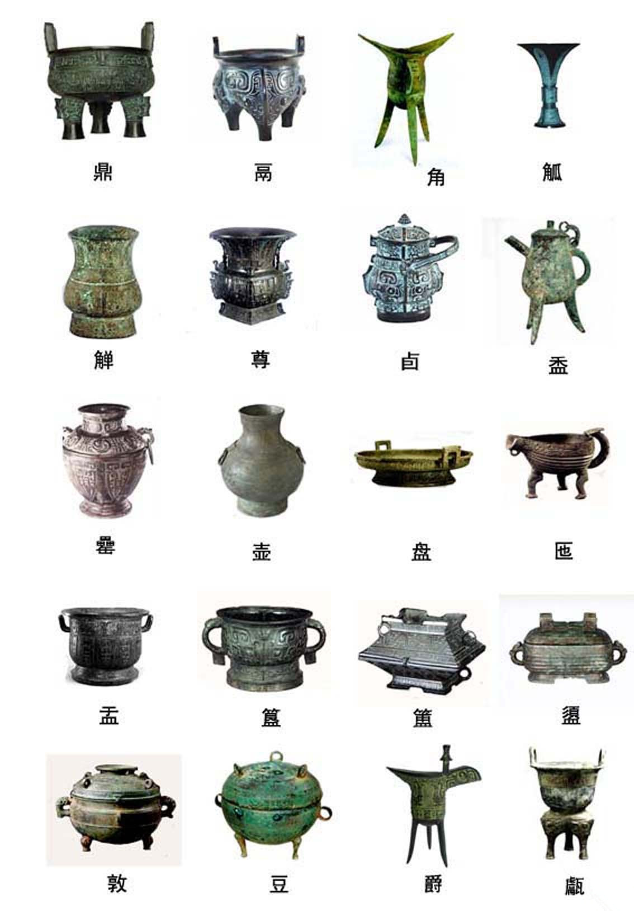
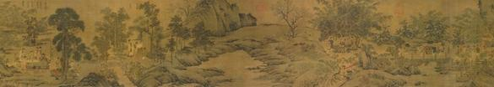

Dossier 02
宝玉 / Bao Yu
他在课程中持续追问：器物、铭文、拓片和空间如何把秩序固定下来。
Profile
档案事实
宝玉卷宗以中国艺术史 C1.0 课堂材料与课程角色线索为基础。
| 姓名 | 宝玉 / Bao Yu |
|---|---|
| 课程身份 | KART 学员；中国艺术史 C1.0 中有学生洞见被收编进课程 Matrix；V3.0 游戏中作为“文明史家”出现。 |
| 已整理材料类型 | 教学管线、跨课知识索引、第5课作业说明、阶段测验游戏源文件。 |
| 艺术史课核心线索 | 从器物、铭文与全形拓进入制度记忆，再把制度感转回生活空间审美。 |
| 后续扩展材料 | 成员页、作品集、艺术量表、导师课成长图像、个人作品附件等可在取得后继续补充。 |
Course Record
中国艺术史课中的成长线
宝玉的优势不是感受性抒发，而是把器物读成制度结构。
| 课程 | 已整理洞见 | 成长动作 |
|---|---|---|
| C1.0-2 玉礼肇兴 | “宝玉系列”作为课程线索保存。 | 从玉礼或日常观察中形成连续洞见，后续可随课程材料继续展开。 |
| C1.0-3 青铜礼成 | “全形拓+联想”的铭文解读方法，“没有危机感”的治理术即儒家雏形。 | 把青铜器、铭文和全形拓读成治理记忆，不满足于风格描述。 |
| C1.0-4 漆绘楚魂 | 将铭文理解转化为生活空间审美，提出“天人合一的长期审美结构”。 | 把器物上的制度感转到房间、陈设和日常秩序。 |
| C1.0-5 秦汉浑成 | 第5课作业设计延续两人的日常观察传统。 | 保留承接线索，后续可随课堂记录继续展开。 |
Narrative
宝玉这条线的核心，是读懂秩序如何藏在物里。


AOEM
AOEM 更新
宝玉的命名能力很强，课程训练要让抽象判断持续回到作品细节。
| 维度 | 当前记录 | 下一步 |
|---|---|---|
| Observation 观看 | 擅长从器物、铭文、拓片中读结构。 | 继续补充第2课“宝玉系列”的具体材料。 |
| Analysis 判断 | 能把器物读成治理术和制度记忆。 | 训练他区分结构判断与过度联想。 |
| Expression 表达 | 概念表达有强烈命名能力。 | 要求他用具体作品细节支撑抽象命名。 |
| Meaning 文化理解 | 已从制度读法转向生活审美。 | 把艺术史判断转成可被他人体验的空间/图像叙事。 |
Game Role
游戏角色定位
宝玉在阶段测验中承担“宝玉的追问”：这件东西怎样把秩序、记忆和人的位置固定下来？他负责让玩家看见玉、鼎、墓、佛像、山水、御窑、地图、外销瓷背后的结构。